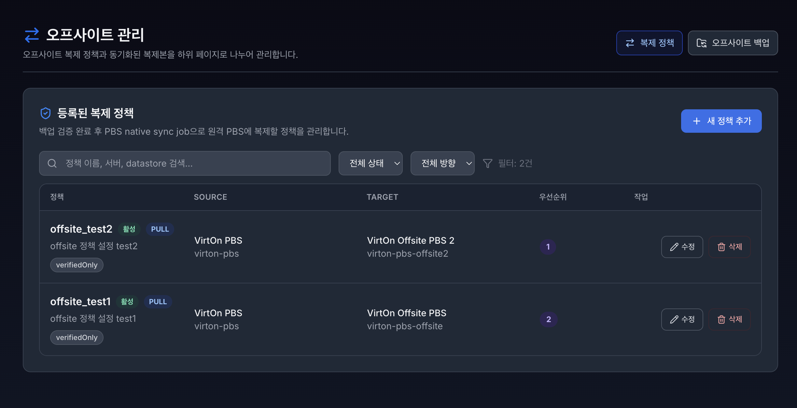
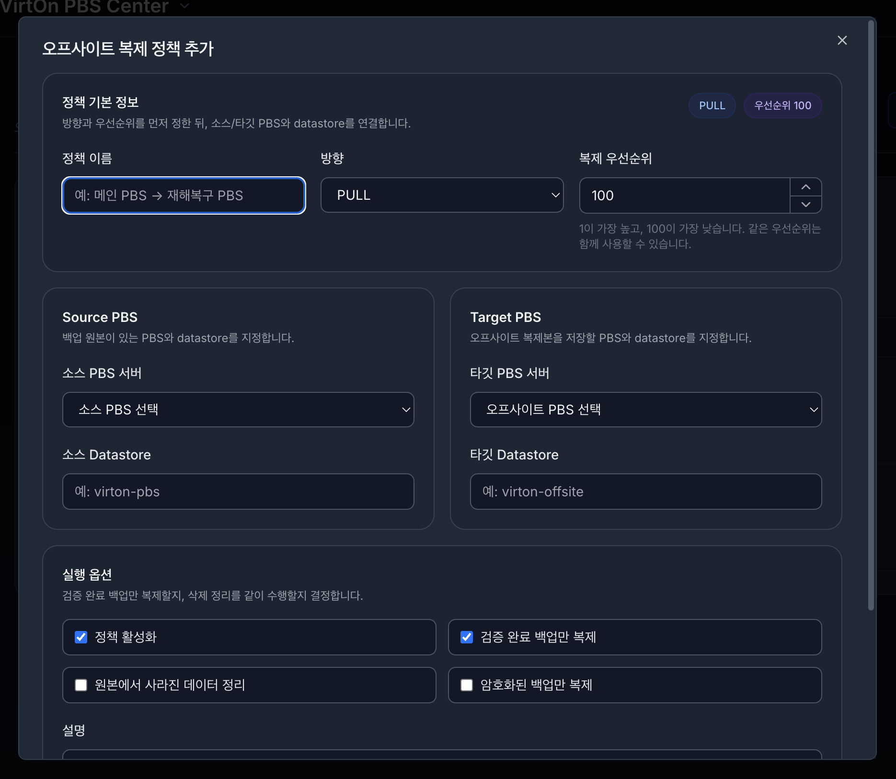

복제 정책#

오프사이트 복제 정책과 동기화된 복제본을 하위 페이지로 나누어 관리합니다.
5.1. 복제 정책#

오프사이트 복제 정책 설정:
정책 이름 : 복제 정책명
방향 : PULL 및 PUSH 설정 여부
Source PBS : 소스(일반) PBS
Target PBS : 오프사이트 전용 PBS
Source Datastore : 소스(일반) PBS에 만들어 둔 타겟 데이터스토어명
Target Datastore : 오프사이트 PBS에 만들어 둔 타겟 데이터스토어명
설명 : 정책 용도나 운영 메모
활성화 설정 :
정책 활성화 - 해당 정책 활성화 유무
검증 완료 백업만 복제 (verifiedOnly) - 검증 완료 백업만 복제할 것인지 유무
원본에서 사라진 데이터 정리 (removeVanished) - 원본에서 사라진 백업 데이터는 삭제할 것인지 유무
암호화된 백업만 복제 (encryptedOnly) - 암호화된 백업만 복제할 것인지 유무
우선순위 : 1~100까지의 복제 우선 순위를 정할 수 있습니다. 1이 가장 높고, 100이 가장 낮습니다. 같은 우선순위는 함께 사용할 수 있으며 순서없이 지정됩니다.
복제 정책 목록:
등록된 목제 정책 목록으로 간단한 설정 정보를 확인 가능하며 수정 및 삭제가 가능하다.